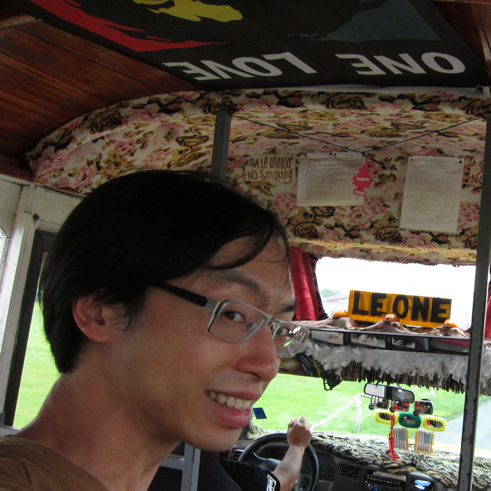

Welcome to Hilário de Sousa's webpage

Greetings! I am a linguist with a wide range of interests, with leanings towards the phonology, morphosyntax and semantic typology in East/Southeast Asian and Pacific languages. In this page you will find a list of publications (some downloadable), some manuscripts and presentations, personal information, and links to hobby things. Please come back and revisit this page! -As this page will continually grow through ongoing and future activities, and also me gradually digging through and recovering things from the past.
Publications
- de Sousa, Hilário. forthcoming. A grammar of Nánníng Pínghuà. Berlin: De Gruyter Mouton.
- de Sousa, Hilário. forthcoming. The Menggwa Dla language of New Guinea (Pacific Linguistics). Berlin: De Gruyter Mouton.
- Majid, Asifa & Roberts, Seán G. & Cilissen, Ludy & Emmorey, Karen & Nicodemus, Brenda & O'Grady, Lucinda & Woll, Bencie & LeLan, Barbara & de Sousa, Hilário & Cansler, Brian L. & Shayan, Shakila & de Vos, Connie & Senft, Gunter & Enfield, N. J. & Razak, Rogayah A. & Fedden, Sebastian & Tufvesson, Sylvia & Dingemanse, Mark & Ozturk, Ozge & Brown, Penelope & Hill, Clair & Le Guen, Olivier & Hirtzel, Vincent & van Gijn, Rik & Sicoli, Mark A. & Levinson, Stephen C. 2018. Differential coding of perception in the world’s languages. PNAS 115 (45). 11369-11376. doi:10.1073/pnas.1720419115
pdf; Open Access!
- de Sousa, Hilário. 2017. Pínghuà 平話 Dialects. In Sybesma, Rint & Behr, Wolfgang & Gu, Yueguo & Handel, Zev & Huang, C.-T. James & Myers, James (eds.), Encyclopedia of Chinese language and linguistics, vol. 3, 425–431. Leiden: Brill. doi:10.1163/2210-7363_ecll_COM_00000332.
pre-publication draft; book on Brill's website; Google Books
- de Sousa, Hilário. 2016. Some non-canonical switch reference systems and the fundamental functions of switch reference. In van Gijn, Rik & Hammond, Jeremy (eds.), Switch Reference 2.0 (Typological Studies in Language 114), 55–92. Amsterdam: John Benjamins.
pre-publication draft; chapter on John Benjamins' website
- de Sousa, Hilário. 2015a. Language contact in Nanning: Nanning Pinghua and Nanning Cantonese. In Chappell, Hilary (ed.), Diversity in Sinitic languages, 157–189. Oxford: Oxford University Press. doi:10.1093/acprof:oso/9780198723790.003.0007.
pre-publication draft; book on OUP's website, Google Books
- de Sousa, Hilário. 2015b. The Far Southern Sinitic Languages as part of Mainland Southeast Asia. In Enfield, N.J. & Comrie, Bernard (eds.), Languages of Mainland Southeast Asia : The state of the art (Pacific Linguistics 649), 356–439. Berlin: De Gruyter Mouton. doi:10.1515/9781501501685-009.
pre-publication draft; book on De Gruyter's website; Google Books
- de Sousa, Hilário & Langella, François & Enfield, N.J. 2015. Temperature terms in Lao, Southern Zhuang, Southern Pinghua and Cantonese. In Koptjevskaja-Tamm, Maria (ed.), Linguistics of temperature (Typological studies in language 107), 594–638. Amsterdam: John Benjamins. doi:10.1075/tsl.107.19sou.
pre-publication draft; book on John Benjamins' website; Google Books
- Chen, Yujie & de Sousa, Hilario & Wang, Jian & Ngai, Sing Sing & Li, Xuping & Chen, Weirong & Chappell, Hilary (陈玉洁 & Hilario de Sousa & 王健 & 倪星星 & 李旭平 & 陈伟蓉 & Hilary Chappell). 2014. Láibǐxí biāozhù xìtǒng jí qí zài Hànyǔ yǔfǎ yánjiū zhōng de yìngyòng (莱比锡标注系统及其在汉语语法研究中的应用) [The Leipzig glossing rules and its application in the research of Chinese grammar]. Fāngyán (方言) 2014(1). 1–13.
- de Sousa, Hilário (蘇沙). 2013a. Nánníng Shàngyáo Pínghuà de yīxiē míngcí duǎnyǔ xiànxiàng duìbǐ yánjiū (南宁上尧平话的一些名词短语现象对比研究) [Comparative study on some noun phrase phenomena in Nanning Shangyao Pinghua]. In Liú, Dānqīng (刘丹青) & Zhōu, Léi (周磊) & Xuē, Cáidé (薛才德) (eds.), Hànyǔ fāngyán yǔfǎ yánjiū de xīnshìjiǎo — Dìwǔjiè Hànyǔ Fāngyán Yǔfǎ Guǒjì Xuéshù Yántǎohuì lùnwénjí (汉语方言语法研究的新视角 — 第五届汉语方言语法国际学术研讨会论文集) [New viewpoints on the studies of the grammar of Chinese dialects — Proceedings of the Fifth International Academic Conference on the Grammar of Chinese Dialects], 141–160. Shanghai: Shanghai Education Publishing House.
pre-publication draft; de Sousa 2010b has glosses and free-translations in English.
(Nota bene: I have since discovered that the classifier is kɯ˥ instead of kə˥; the vowel ɯ only exists in this one word.)
- de Sousa, Hilário. 2012a. Generational differences in the orientation of time in Cantonese speakers as a function of changes in the direction of Chinese Writing. Frontiers in Cultural Psychology 3. 255. doi:10.3389/fpsyg.2012.00255. pdf; Open Access!
- de Sousa, Hilário. 2011a. Changes in the language of perception in Cantonese. Senses and Society 6(1). 38–47. doi:10.2752/174589311X12893982233678. pre-publication draft
- de Sousa, Hilário. 2010a. Book Review: The Manambu Language of East Sepik, Papua New Guinea. By Alexandra Y. Aikhenvald. Pacific Affairs 83(2). 40–42. doi:10.14288/1.0044954.
online text version; pdf; Open Access!
- de Sousa, Hilário. 2008a. The development of echo-subject markers in Southern Vanuatu. In Curnow, Timothy Jowan (ed.), Selected papers from the 2007 Conference of the Australian Linguistic Society. http://www.als.asn.au. pdf; Open Access!
- de Sousa, Hilário. 2006b. What is switch-reference? From the viewpoint of the young people’s switch-reference system in Menggwa Dla. Te Reo 49. 39–71.
- de Sousa, Hilário. 2006c. Switch-reference in a dying Language: the case of Menggwa Dla. In Allan, Keith (ed.), Selected papers from the 2005 Conference of the Australian Linguistic Society. http://www.als.asn.au. pdf; Open Access!
Thesis
Some presentations and manuscripts
The following are some presentation slides/handouts and manuscripts. (I will try to dig out more, especially from older computers.)
- de Sousa, Hilário. 2019. Some aspects and related markings in Nanning Cantonese and Nanning Pinghua. (Paper presented at The 1st International Workshop on Cantonese Syntax, Univerzita Palackého v Olomouci, Olomouc, 27–28 June 2019.) Slides (opens in Google Drive)
- de Sousa, Hilário. 2019. On Pínghuà 平話 and Yuè 粵. (Paper presented at Contact zones and colonialism in Southeast Asia and China's South conference, Pennsylvania State University, University Park PA, 10–12 May 2019.) Slides (opens in Google Drive)
- de Sousa, Hilário 蘇沙. 2016. 语言记录中的语法描写. (Lecture prepared for ELDP Documentation Training, Yunnan China, Yuxi Normal University, 27 October 2016.) Slides
- de Sousa, Hilário 蘇沙. 2016. 语言记录中的语料库建立 Corpus construction in Language Documentation. (Lecture prepared for ELDP Documentation Training, Yunnan China, Yuxi Normal University, 26 October 2016.) Slides
- de Sousa, Hilário 蘇沙. 2016. Audacity 应用. (Lecture prepared for ELDP Documentation Training, Yunnan China, Yuxi Normal University, 25 October 2016.) Slides
- Phan, John D. & de Sousa, Hilário. 2016. A preliminary investigation into *Southwestern Middle Chinese. (Paper presented at the International workshop on the history of Colloquial Chinese – written and spoken, Rutgers University, New Brunswick NJ, 11–12 March 2016.) Slides
- de Sousa, Hilário. 2014. Talking about smells in Cantonese. (Seminar presented at Radboud Universiteit Nijmegen, Nijmegen, 1 July 2014.) Slides
- de Sousa, Hilário. 2013. The Far Southern Sinitic languages – from the points of view of the Sinitic language family and the Mainland Southeast Asia linguistic area. (Paper presented at The 1st Asian and European Linguistic Conference (AE Link), International Institute for Asian Studies, Leiden, 10 December 2013.) Slides
- de Sousa, Hilário. 2013. What non-canonical switch-reference systems tell us about switch-reference. (Paper presented at the 46th Annual Meeting of the Societas Linguistica Europaea, Sveučilište u Splitu, Split, 18–21 September 2013.) Slides
- de Sousa, Hilário. 2013. What is Pínghuà – some typological features of Nánníng Pínghuà. (Paper presented at The Final Symposium for the ERC project SINOTYPE "The Hybrid Syntactic Typology of Sinitic Languages", École des hautes études en sciences sociales, Paris, 26 June 2013.) Slides
- de Sousa, Hilário. 2013. Introducing more participants in Nanning Pinghua and Nanning Cantonese. (Paper presented at Workshop 'Structural Changes in Heritage Languages', Leeuwenhorst, Noordwijkerhout, organised by Radboud Universiteit Nijmegen, 23–25 January 2013.) Slides
- de Sousa, Hilário. 2012. The Southern Sinitic languages at the edge of Mainland Southeast Asia. (Paper presented at Workshop "Mainland Southeast Asian Languages: The State of the Art in 2012", Max Planck Institute for Evolutionary Anthropology, Leipzig, 29 November–1 December 2012.) Slides part 1, part 2, part 3
- de Sousa, Hilário. 2012. The Southern Sinitic languages at the edge of Mainland Southeast Asia. (Seminar presented at Berner Zirkel für Sprachwissenschaft, Universität Bern, Bern, 21 November 2012.) Handout on word order
- de Sousa, Hilário. 2012. The Pinghua Language. (Seminar presented to Bill Croft and others at École des hautes études en sciences sociales, Paris, May 2012.) Slides part 1, part 2
- de Sousa, Hilário. 2012. The typology of Sinitic languages from the perspective of Mainland Southeast Asia. (Seminar presented at Australian National University, Canberra, and at The University of Auckland, Auckland, February 2012.) Slides
- de Sousa, Hilário. 2011. Some aspect and negation markers in Nanning Cantonese and Nanning Pinghua. (Paper presented at The 7th Conference of the European Association of Chinese Linguistics (EACL-7), Università Ca' Foscari Venezia, Venice, 13–15 September 2011.) Handout
- de Sousa, Hilário. 2011. Ideophonic compounds in East and Southeast Asia. (Paper presented at Association for Linguistic Typology 9th Biennial Conference (ALT9), University of Hong Kong 香港大學, Hong Kong, 21–24 July 2011.) Slides
- de Sousa, Hilário. 2011. Language contact in Nanning – a city on the Tai-Sinitic linguistic frontier. (Paper presented at Workshop on ecology, populations movements and language diversity, Université Lumière Lyon 2, Lyon, 26–27 May 2011.) Slides
- de Sousa, Hilário. 2011. Nanning Cantonese and Nanning Pinghua – their Tai-ness and non-Tai-ness. (Paper presented at 21st Conference of Southeast Asian Linguistics Society, Kasetsart University มหาวิทยาลัยเกษตรศาสตร์, Bangkok, 11–13 May 2011.) Slides
- de Sousa, Hilário (蘇沙). 2010. 南宁上尧平话「个 kə55」用法初探 [Initial investigations into the usage of kə55 in Nanning Shangyao Pinghua]. (Paper presented at 第五届汉语方言语法国际学术研讨会 [The 5th international conference on the grammar of Chinese Dialects], Shanghai University 上海大学, Shanghai, 27–28 November 2010.) Handout, paper
- de Sousa, Hilário. 2010. The grammar of Southern Pinghua – 'biased' diffusion in a complex contact situation. (Paper presented at Syntax of the World's Languages IV, Université Lumière Lyon 2, Lyon, 23–26 September 2010.) Slides
- de Sousa, Hilário. 2010. The Southern Pinghua language and its love songs. (Paper presented at The Second Conference in Linguistics within the Birgit Rausing Language Program — Humanities of the Lesser Known, Lunds Universitet, Lund, 10–11 September 2010.)
Slides part 1, part 2, part 3, part 4
- de Sousa, Hilário & Hammond, Jeremy. 2010. Echo subject in Southern Vanuatu versus switch reference – some comparisons of Southern Vanuatu and New Guinea. (Paper presented at COOL8: 8th International Conference on Oceanic Linguistics, University of Auckland, Auckland, 04–09 January.) Slides
- de Sousa, Hilário. 2009. Southern Pinghua and its noun phrase structure — an introduction. (Seminar presented at EHESS, 11 December 2009.) Slides
- de Sousa, Hilário. 2009. The changes in the language of perception in Cantonese. (Paper presented at American Anthropological Association 108th Annual Meeting, Philadelphia Mariott Downtown, Philadelphia PA, 2-6 December 2009.) Slides
- de Sousa, Hilário. 2009. Changes in time in space and space in time – the case of Cantonese language and Chinese script. (Paper presented at Time in space workshop, Max Planck Institute for Psycholinguistics, Nijmegen, 14–15 April 2009.) Slides
- de Sousa, Hilário. 2009. There are NO universal grammatical categories. (Seminar presented at Max Planck Institute for Psycholinguistics, Nijmegen, 16 February 2009.) Slides
- de Sousa, Hilário. 2008. The language of perception in Cantonese. (Seminar presented at Max Planck Institute for Psycholinguistics, Nijmegen, 6 November 2008.) Slides
- de Sousa, Hilário. 2008. The local cases in Menggwa Dla and case-syncretism in the Sepik Region. (Paper presented at PIONIER Workshop on Locative Case, Radboud Universiteit Nijmegen, Nijmegen, 25–26 August 2008.) Slides, handout
- de Sousa, Hilário. 2008. Ideophones in Cantonese – the role of tones. (Paper presented at workshop Human locomotion across languages, Max Planck Institute for Psycholinguistics, Nijmegen, 6 June 2008.) Slides
- de Sousa, Hilário. 2001. Noun phrase structure and the case marking system in Niuean. University of Auckland. Manuscript
(In memory of František (Frank) Lichtenberk, whose handwritten remarks can be seen in this manuscript. Also thank you to Diane Massam, who hold on to a copy of this all these years.)
Me
Positions held and other work experience:
I can be reached at hilario arroba bambooradical ponto com